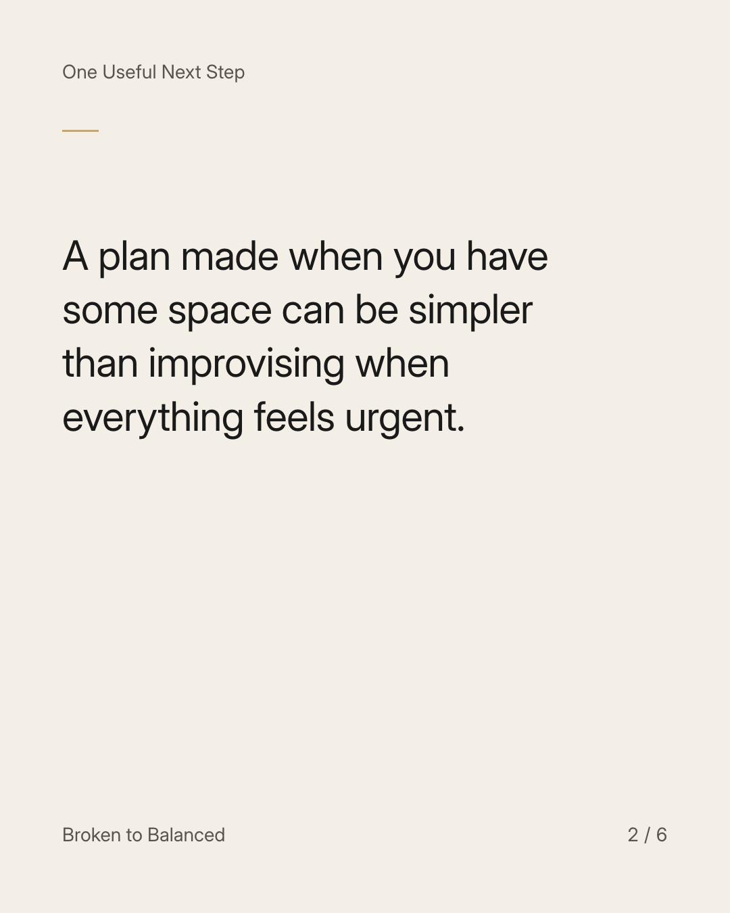
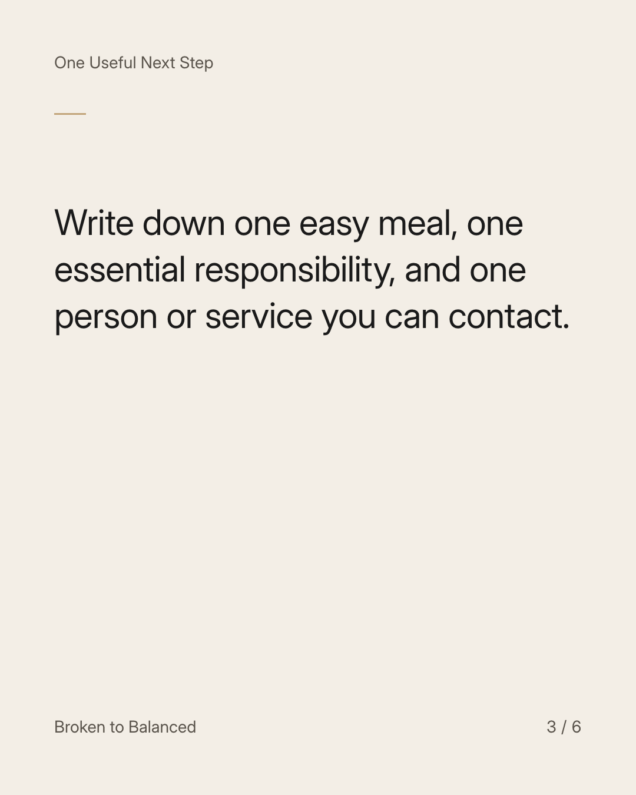
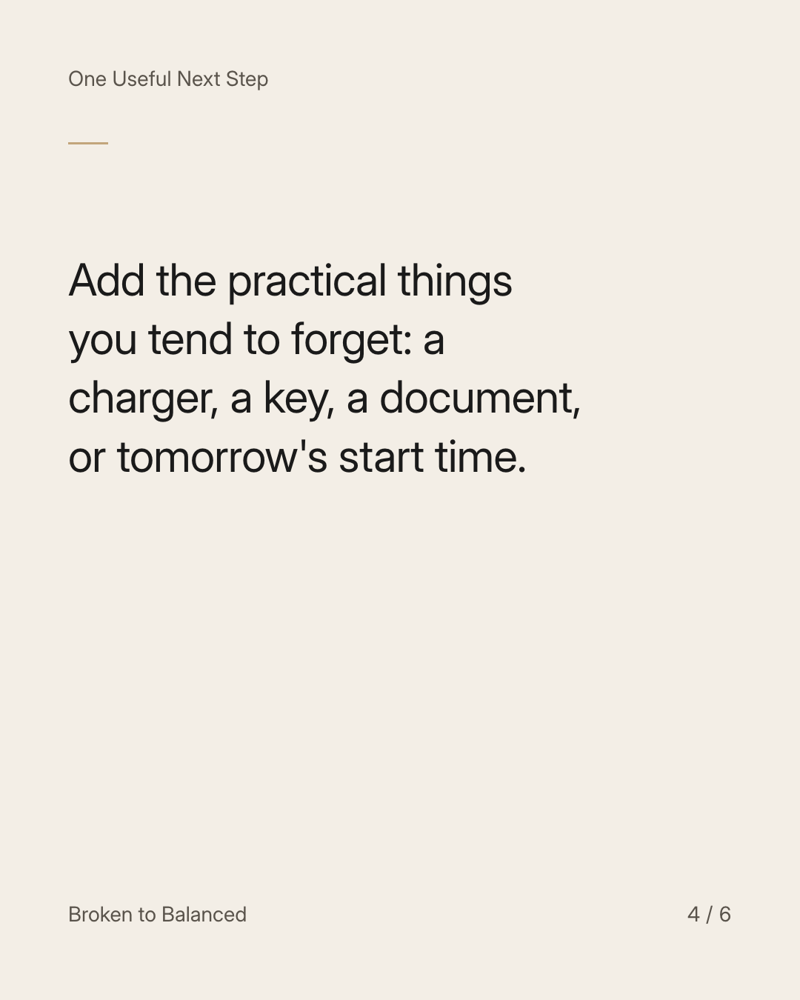
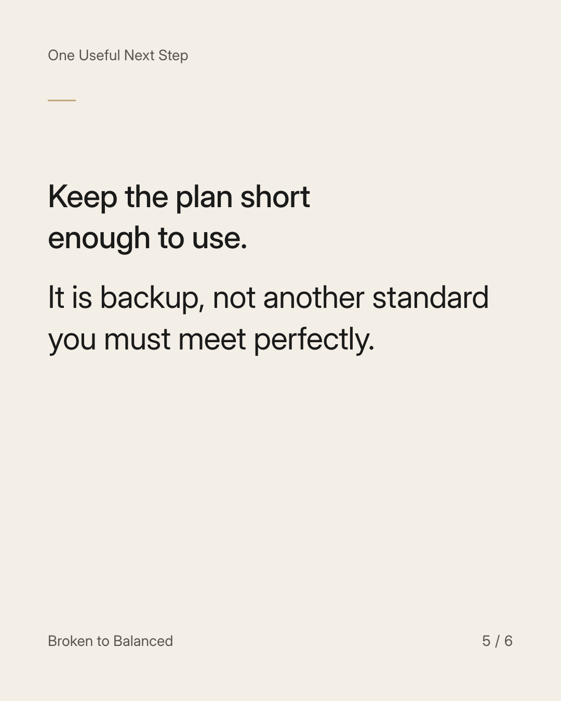
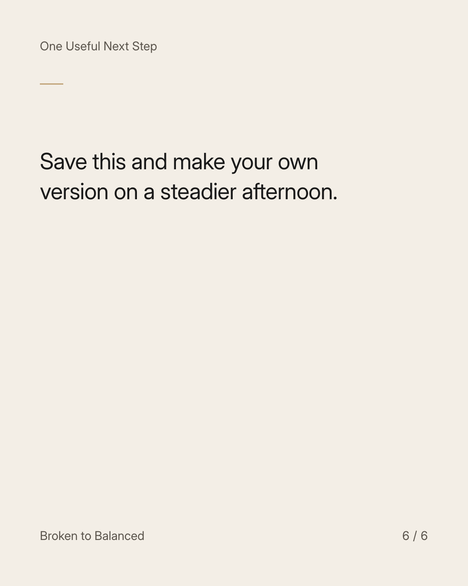

Exact text and accessibility text
Build a difficult-day plan before the next difficult day.
Slide 1 of 6. Build a difficult-day plan before the next difficult day.


Exact text and accessibility text
A plan made when you have some space can be simpler than improvising when everything feels urgent.
Slide 2 of 6. A plan made when you have some space can be simpler than improvising when everything feels urgent.


Exact text and accessibility text
Write down one easy meal, one essential responsibility, and one person or service you can contact.
Slide 3 of 6. Write down one easy meal, one essential responsibility, and one person or service you can contact.


Exact text and accessibility text
Add the practical things you tend to forget: a charger, a key, a document, or tomorrow's start time.
Slide 4 of 6. Add the practical things you tend to forget: a charger, a key, a document, or tomorrow's start time.


Exact text and accessibility text
Keep the plan short enough to use. It is backup, not another standard you must meet perfectly.
Slide 5 of 6. Keep the plan short enough to use. It is backup, not another standard you must meet perfectly.


Exact text and accessibility text
Save this and make your own version on a steadier afternoon.
Slide 6 of 6. Save this and make your own version on a steadier afternoon.
Exact caption
Plain-text fallback: select and copy the caption.